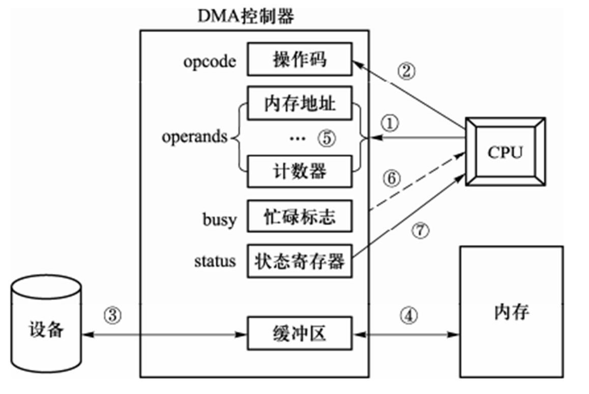
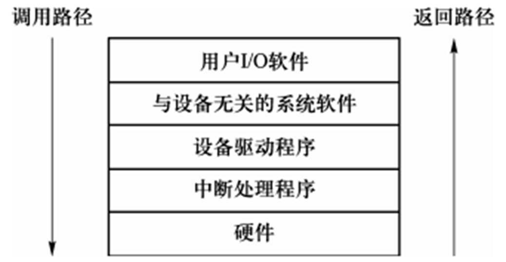
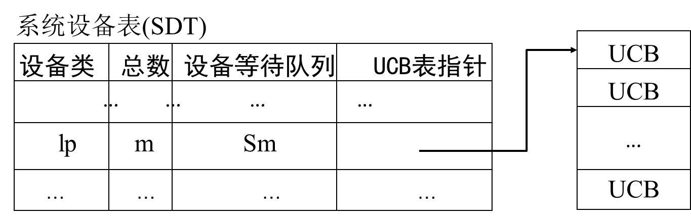
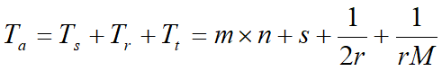
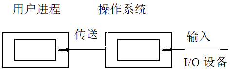
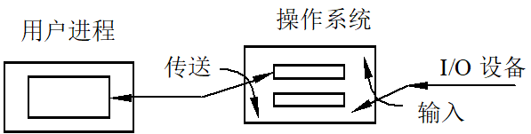
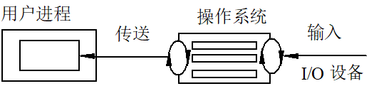

设备与IO管理
设备管理的功能
设备管理的目标
- 合理的分配和调度设备资源
- 负责设备驱动和中断处理
现代设备管理采用缓冲和并行技术
- 处理器远快于设备
- 设备与CPU，以及设备与设备并行
虚拟设备（假脱机技术，SPOOLing技术）
利用共享设备来构造数量较多、速度较快的虚拟设备，或者将独占性设备利用代理进程变为共享性设备
设备管理过程
- 设备分配与去配
- 设备分配：将设备分配到哪一个要求该类设备的进程
- 设备去配：收回由某占有资源的进程处的设备资源
- 设备处理：设备驱动，实现I/O 进程与设备控制器之间的通信
- 缓冲管理：提高 CPU 和 设备的并行度，尽量减少中断
设备的分类
- 交互对象分类：人机交互（显示器，键盘鼠标），与CPU等交互（磁盘磁带），计算机间通信（网卡）
- 交互方向：输入（键盘），输出（显示器），双向（软硬盘，网卡）
- 外设特性：使用特征（存储，输入输出），数据传输率，信息组织特征（字符，块，网络）
- 用途：存储，IO，网络
[!tip]
数据传输基本单位：块型设备（磁盘磁带光盘），字符型设备（输入输出通信），时钟和显示器
从资源管理角度
- 共享型设备（块型）
- 多个进程的IO操作以块交叉
- 无需申请和释放设备
- 包括除磁带机之外的所有块型设备
- 属于有结构设备，传输速度高，可寻址
- 独占型设备（块型）
- 多个进程的IO操作以块为单位不能交叉
- 只能顺序访问（磁带机）
- 独占型设备（字符型）
- 多个进程的IO操作以字符为单位不能交叉
- 使用时，向系统申请。时常采用中断I/O方式
- 属于无结构设备，传输速率低，不可寻址
- 共享型设备（块型）
设备的物理特性
字符型设备的物理特性
每传送一个字符发生一次I/O中断。如打印机、键盘、鼠标等
低速、不可寻址，在输入/输出时常采用中断驱动方式
独占型设备，为此需要提供打开和关闭操作，实现互斥
存储型设备的物理特性
以块为单位进行数据传送，如磁盘。每传输完一块，发生一次中断
高速、可寻址，磁盘设备的I/O常采用DAM方式
块设备接口将磁盘的所有扇区从0到n-1依次编码，这样将三维结构变成一种线性序列
磁带的物理特性
- 磁带的物理特性：启停设备
一维地址，顺序结构（一个文件占若干连续块）
IO传输方式
程序控制查询
- 探询(polling）又称程序控制输入输出，是最早的输入输出控制
- 硬件提供输入输出指令
- 内存操作指令：IO设备与内存统一编址
- 处理器代表进程向相应的设备模块发出输入输出请求，
- 然后处理器反复查询设备的状态，直至输入输出完成
中断驱动
当需要输入输出时，从当前程序处转入中断服务程序进行IO操作，然后返回断点
内存映射
- 采用取数和送数指令（MOV）
- 操作简单具有即时完成的特点，即指令执行完输入输出操作也就执行完了，没有中断需要处理
DMA方式
- 不经过CPU而直接从主存存取数据
通过总线在外设和主存之间开辟直接的数据交换通路
DMA特点
- 数据块传输
- 数据是从设备送到内存，或者相反
- DMA控制器
- 在DMA控制器的控制下，每传送一块，向CPU发送一次中断
[!tip]
- 开始DMA传输时，主机向内存写入DMA命令块，向DMA控制器写入该命令块的地址，启动I/O设备
- CPU继续执行其它工作(不占用总线），DMA控制器直接操作内存总线，将地址放到总线上开始传输。整个传输完成后，DMA控制器中断CPU

[!important]
DMA和中断驱动
- 中断驱动在每个数据（字节）传输后中断CPU，DMA一个数据块后中断
- 中断驱动数据传送是在中断处理时由CPU控制完成
- DMA方式的数据传送是在DMA控制器的控制下完成。
通道方式
- 一个专门负责输入/输出的硬件——通道来控制数据传送方向、存放数据的内存始址及传送的数据块长度
- 负责IO操作的处理机，独立于CPU，有自己的指令系统
- DMA(一个数据块)发展为通道（一组数据块）
- 实现CPU、通道和I/O设备三者的并行操作
通道
- 负责IO操作的处理机
- 指令系统：基本操作（控制，读写，转移，结束）；指令格式（操作码，传输量，特征位，地址）
- 运控部件：CAW,CCW,CSW,CDW
- 存储区域：与CPU共用内存，通道内有缓冲区
通道在IO设备的作用
- 通道指令单一，没有独占的内存
- 通道程序是放在主机的内存中
- 一条通道指令可以传送一组数据，全部传输完毕后才向处理器发一次中断
[!note]
- 具有通道结构的计算机系统
- 主机、通道、控制器和设备之间采用四级连接，实施三级控制
- 一个CPU连接若干通道；一个通道连接若干控制器；一个控制器连接若干设备
- CPU通过执行I/O指令对通道实施控制，通道执行通道指令对控制器实施控制，控制器发出动作序列对设备实施控制，设备执行相应输入输出操作
[!important]
通道与DMA
- DMA需要CPU来控制传输数据库的大小、传输的内存位置，通道自己控制
- 设置通道后，CPU只需向通道发出一条I/O指令。
- DMA控制器对应一台设备与内存传送数据，
- 一个通道可以控制多台设备与内存的数据交换
通道类型
- 字节多路通道：字节交换，许多非分配型子通道分别连接一台IO设备，子通道按时间片轮转共享主通道，用于低速IO
- 数组选择通道：块交换，一个分配型子通道，一段时间内执行一个通道程序，用于高速IO
- 数据多路通道：分时的方式执行几个通道程序

IO设备控制器（接口）
- 接受识别CPU指令
- 数据交换
- 标识和报告设备的状态，以供CPU处理
- 地址识别，数据缓冲，差错控制
IO端口
I/O端口指设备控制器中可被CPU之间访问的寄存器
- 数据寄存器：数据缓冲
- 状态寄存器：执行结果以及设备状态信息
- 控制寄存器：由CPU写入，启动命令或者更改设备模式
[!note]
采用通道实现IO操作的具体数据输入过程
- 进程需要输入数据，CPU向通道发出IO指令，给出要执行的通道程序的首地址和要访问的I/O设备
- 通道接收启动指令，读出内存的通道程序并执行，控制设备传送数据
- 数据传送结束，通道向CPU发出中断请求
- CPU收到中断信号转至中断处理程序，唤醒等待输入完成的进程，返回断点
- 在以后某个时刻，进程调度程序选中提出请求输入的进程，该进程从指定的内存单元中取出数据做进一步处理.
IO软件的层次
IO软件设计的基本思想
- 设备管理软件组成层次结构，向下接入硬件，向上与用户交互
- 与进程管理、存储器管理、文件管理存在一定联系
- I/O软件有清晰结构，良好的可移植性和适应性
- 分为四个层次，其中设备驱动和中断处理最为接近硬件

用户IO软件
- 实现与用户交互的接口，用户利用与IO操作有关的API对设备操作
- 操作系统的系统调用也是以函数界面形式供用户程序调用，如
Linux:open()、read()、write()、close()等 - 为相应的系统调用提供参数，进而获取操作系统服务
与设备无关的系统软件
本层往下一般在操作系统内核中实现。为上层提供系统调用接口，对下则通过设备驱动接口调用设备驱动程序
系统调用处理程序
实现设备无关性，引入了逻辑设备和物理设备概念。在系统实际执行时，必须将逻辑设备名映射成物理设备名使用
主要功能
- 向设备驱动程序提供统一接口：将逻辑设备名映射为物理设备名
- 向用户层提供统一接口
- 设备保护，禁止用户直接访问设备
- 缓冲，其中缓冲区在系统区
- 提供与设备无关的块尺寸
- 错误报告
- 设备分配与去分配
设备驱动程序
- 设备驱动程序是I/O进程与设备控制器之间的通信程序
- 实现物理I/O操作的启动和执行，即用来具体实现系统对设备发出的操作指令，驱动I/O设备工作
- 响应通道中断请求，根据中断类型调用相应中断处理
- 与硬件直接有关，如构建通道程序，启动设备，响应通道中断
[!tip]
- 接收到的上层软件发来的抽象要求（函数）转换为具体要求（指令）
- 检查用户请求合法性，了解设备状态，传参，设置设备工作方式
- 发出IO命令，启动分配的设备，完成IO操作并响应中断转到相应类型的中断处理
- 对于设置有通道的计算机系统，驱动程序还应能够根据用户的 I/O 请求，自动地构成通道程序
中断处理程序
- 用于保存被中断进程现场，转入相应的中断处理程序进行处理
- 处理完后恢复现场，并返回到被中断的进程
具体过程
[!important]
当用户程序想要读取文件中的数据时，执行步骤：
- 用户I/O软件对用户的I/O请求进行解释，调用系统调用接口，假设调用read接口
- 与设备无关的系统软件首先在高速缓存中查找该数据块
- 若未找到，则调用设备驱动程序向硬件发出相应请求，用户进程阻塞直到数据块被读出
- 当磁盘操作完成，硬件产生一个中断，并转入中断处理程序
- 中断处理程序检查中断原因（传输是否出错，传输是否继续等），唤醒被阻塞进程以结束此次 I/O 请求，使用户进程继续执行
设备的分配与去配
- 独占型设备的分配与去配
- 块型独占
- 字符型独占
- 共享型设备的分配与去配
- 块型共享
相关数据结构
- 设备控制块（UCB)：设备的标识，状态，相连通道，占有设备进程
- 控制器控制块（CUCB）：控制器标志，状态，相连通道，占有控制器进程
- 通道控制块（CCB）：通道标识，状态，类型，占有通道进程
- 系统设备表（SDT)
- 记录设备类别，以及各个类别的总数，确定设备的等待队列，以及队列的UCB（设备控制块）表的指针

独占设备的分配与去配
用户需要申请后再使用，最后释放
申请：根据设备类查SDT表，P(Sm)，查UCB表找以空闲设备分配
- 使用：分配通道和控制器，形成通道程序，启动设备进行操作，通道中断，去配
- 访问SDT表，查UCB表去配，V(Sm)
共享设备的分配与去配
有通道情形
用户使用共享型设备的活动只有使用，没有申请和分配
特征
- 来自文件系统，虚拟存储管理系统，输入井/输出井
- 每次读写一块
- 通常经过缓存并且有排队优化
使用：分配通道；形成通道程序，启动通道，IO操作，中断处理；释放通道
无通道情形
主要是使用不同于通道
- 分配缓冲，填写头部
- 写：信息复制到缓冲区后链入IO链尾部，若设备空闲则启动设备，IO结束后释放缓冲区
- 读：缓冲区链入IO链尾部，若设备空闲则启动设备，等待数据，中断唤醒后复制信息到进程空间，释放缓冲区
设备驱动
设备驱动特点
与硬件密切相关
每类设备需要配置驱动
有设备厂商根据OS编写
OS仅对驱动接口有要求
设备驱动过程
- 通道程序：CCW指令序列，具体编制或者动态生成，多通道并行执行通道程序
- 设备启动：
- CPU将通道程序的起址放到内存指定单元，然后执行通道启动指令
- 通道启动，指定单元取出通道程序起址，放入通道地址字，依次执行通道指令
- 中断处理：通道向CPU发出中断请求
设备调度
- 主要是优化服务顺序，比如寻道，旋转延迟，传输
- 需要考虑公平（防止饿死）和高效（减少磁盘引臂移动）
磁盘IO参数
[!note]
读写磁盘块时间三个因素：
- 寻道时间（seek time）：将磁盘引臂移动到指定柱面所需要的时间；
- 旋转延迟（rotational delay）：指定扇区旋转到磁头下的时间；
- 传输时间（transfer time）：读/写一个扇区的时间。
- 寻道时间
Ts = m * n + s，n为跨越磁道数，m为跨越一个磁道时间，s启动时间 - 旋转延迟
Tr = 1 / (2*r)，r为磁盘转速 - 传输时间
Tt = b / (r*N)，b为读写字节数，r磁盘转速，N一条磁道字节数
所以访问时间Ta为
一个扇区的访问时间：M为一个磁道上的扇区数

磁头引臂调度
先到先服务（FCFS）
- 按照输入输出请求的次序为各个进程服务
- 例如：130，42，180，15，108，68，97
则移动量：(130-53)+(130-42)+(180-42)+(180-15)+(108-15)+(108-68)+(97-68)=630
最短寻找时间优先（SSTF)
- 优先为距离磁头当前所在位置最近柱面的请求服务。
- 例如：130，42，180，15，108，68，97
移动量：(53-42)+(180-42)+(180-15)=314
扫描算法（电梯算法）
- 无访问请求时，磁头引臂停止不动；
- 当有访问请求时，引臂按照电梯移动规律运动，并为路经柱面的访问请求服务。
- 例如：130，42，180，15，108，68，97
移动量: (53-15)+(180-15)=203
循环扫描算法
- 磁头仅在单方向移动过程中才为路经的请求服务，但只是移动到最内（外）请求柱面为止。
- 请求序列：130，42，180，15，108，68，97
- 存在磁头黏性
N-step SCAN（N步扫描）
将磁盘请求队列分为若干个长度为N的子队列，每个队列内采用SCAN算法
例如
例子：磁道由外向内编号0-99,磁头当前位置20,向内移动,N=4
- 12, 5, 7, 30, 60, 77, 13, 26, 61, 80, 53, 66
- 20→30→12→7→5→13→26→60→77→80→66→61 →53
当N很大时，接近SCAN算法
- 当N=1时，蜕化为FCFS算法
FSCAN（Freezing SCAN，冻结扫描)
- 将磁盘请求分为两个子队列：服务队列，请求队列
- 用SCAN算法扫描服务队列，并为请求服务，服务期间新到达的请求入请求队列
- 扫描完成后交换两个队列的地位
- 特点:克服磁道粘性, 防止饿死
缓冲与缓存
缓冲
[!note]
- 引入缓冲的原因
- 缓和CPU与I/O设备间速度不匹配的矛盾
- 减少对CPU的中断频率，放宽对中断响应时间的限制
提高CPU和I/O设备之间的并行性
Buffering vs. Caching
- buffering: 处理数据到达与离开速度不一致所采用的技术。
- caching: 将慢速存储器上活动信息缓冲到快速存储设备上的技术。
缓冲的分类
- 硬缓冲与软缓冲
- 硬缓冲：设备里
- 软缓冲：内存系统空间（OS管理）
- 私用与共用
- 私用缓冲: 一个缓冲区与一个固定设备相联系，不同设备使用不同的缓冲区，利用率低
- 公用缓冲: 缓冲区由系统统一管理，按需要动态分派给正在进行I/O传输的设备
公共缓冲的管理
单缓冲
- 一个IO请求，OS在主存中分配一个缓冲区
- 设备与处理器对缓冲区的操作是串行的
- 并且无法同时双向通信，半双工

双缓冲
- 双缓冲提供两个缓冲区。
- 进程和设备传送数据时（输入），信息由设备传送到一个缓冲区
- 如满后，信息由设备传到第二个缓冲区，同时处理器将第一个缓冲区内容复制到进程空间
- 然后，再将输入信息传到第一个缓冲区
- 如此交替，可以提供设备和CPU之间的并行性。
- 但双缓冲只是一种说明设备与设备、CPU与设备并行操作的简单模型，并不适用于实际系统中的并行操作。

循环缓冲
- 在设备与进程之间设置多个缓冲区，这些缓冲区连成环状。
- 有两个指针 in 和 out，in 指向当前输入的位置，out 指向当前取出的位置。
- 通过增加缓冲区的个数，可使并行程度得到明显提高。
- 循环缓冲包括以下两部分。(1) 多个缓冲区，(2) 多个指针

缓冲池
- 由多个系统公用的缓冲区组成
- 缓冲池结构：相同类型的缓冲区链成一个队列
- 一组用于块型设备，其长度通常与外围设备物理块的长度相同
- 一组用于字符型设备，其长度通常为8 B、16 B 等
- 三个队列：空缓冲，输入，输出
- 多用于多道程序并发设计
高速缓存
- Cache
- 通过磁盘高速缓存技术提高磁盘的I/O速度，对访问高速缓存要比访问原始磁盘数据更高效